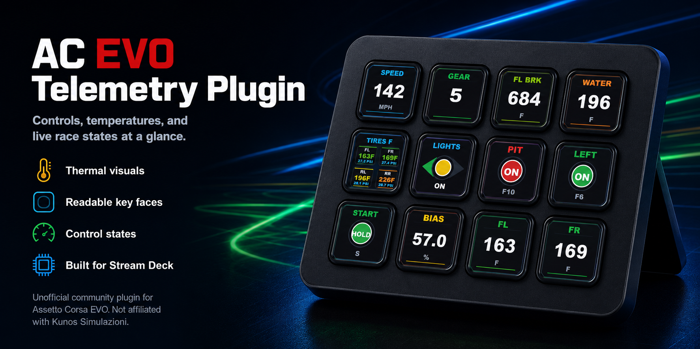
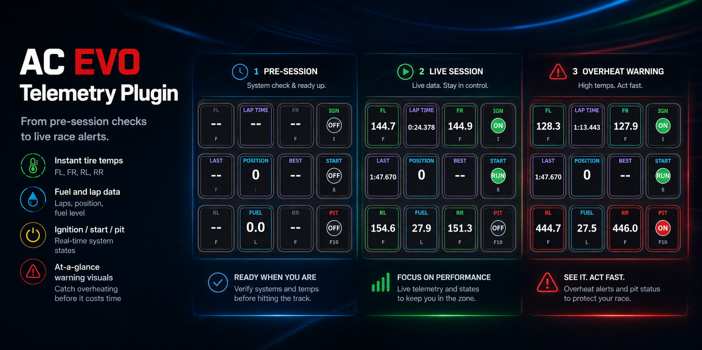
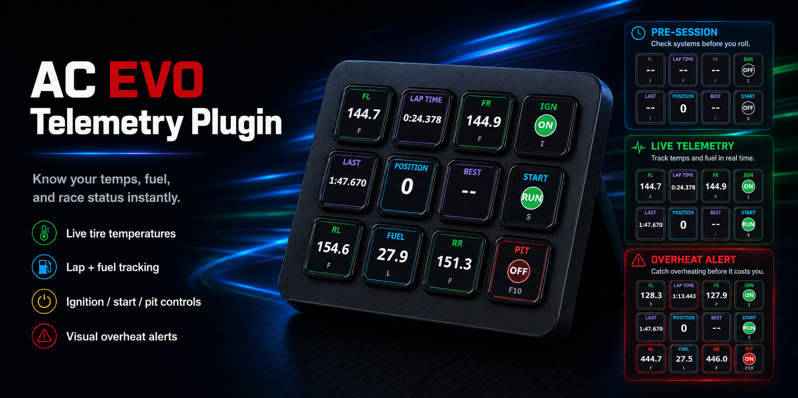

Product Visuals
Reference images for the Marketplace listing, support docs, and quick visual orientation.



Setup Checklist
Most issues come from the sim not being in a live session yet, Stream Deck not seeing the native host, or control keys not matching the game bindings.
Requirements
Windows 10 or newer, Stream Deck 6.9 or newer, and AC EVO running with native shared memory available.
Telemetry Keys
Drag direct actions such as Lap Time, Speed, Gear, Tires, Brake Temp, or Lights from the Stream Deck action list.
Control Buttons
Set the same keyboard binding in AC EVO and in the action's Stream Deck property inspector.
Troubleshooting
The plugin is intentionally native-data-first. If EVO does not expose a value reliably, the plugin should show no data rather than inventing a state.
Quick Checks
- Start AC EVO and load into a driving session.
- Restart Stream Deck if keys show
STALEafter the sim is already running. - Open
http://127.0.0.1:8765/healthon the same PC and confirm the diagnostics service reports healthy. - Open
http://127.0.0.1:8765/telemetryand confirm values change while driving.
Known Limits
Race-control states that are not reliably exposed by native EVO telemetry are left out of the initial action palette.
Controls
Buttons send keyboard input, then render the live state EVO reports back through telemetry.
Indicators
Left and right indicator buttons blink only when their live telemetry state is active.
Pit Limiter
The limiter button pulses while enabled, based on the native pit-limiter value.
Starter
Hold the starter action to hold its key down. Tap/press behavior follows your in-game binding.
Privacy
The plugin is built for local telemetry and local diagnostics.
Local-Only Data
The plugin reads AC EVO telemetry locally from shared memory and exposes diagnostics on 127.0.0.1. It does not send driving telemetry, settings, or personal data to external servers.
Support Data
If you open an issue, include only what you choose to share: Stream Deck version, EVO version, session/car, and local diagnostic output.
Reporting Issues
A good report makes bugs much easier to reproduce.
Include This
- Stream Deck version and Windows version.
- AC EVO version, car, track, and session type.
- Which Stream Deck action is wrong and what the game showed at the same time.
- Output from
http://127.0.0.1:8765/healthand, if useful, the changing field from/telemetry.